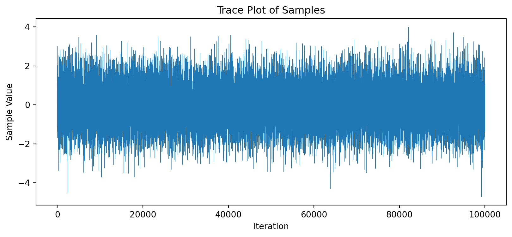
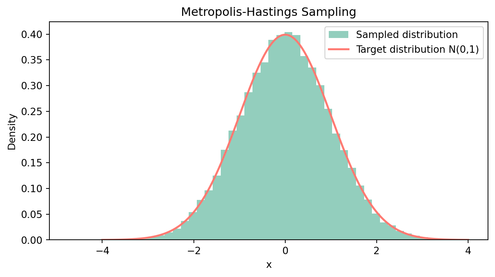

import numpy as np
import matplotlib.pyplot as plt
def standard_normal(x):
"""目標分布 f(x) に比例する関数。ここでは標準正規分布を使用。"""
return np.exp(-0.5 * x**2) # 正規化定数は除く
def metropolis_hastings(N, x_0, proposal_std):
"""
Metropolis-Hastings アルゴリズムによるサンプリング
N: サンプル数
x_0: 初期値
proposal_std: 提案分布の標準偏差
"""
samples =[]
x = x_0
for _ in range(N):
x_new = np.random.normal(loc=x, scale=proposal_std)
acceptance_ratio = standard_normal(x_new) / standard_normal(x)
if np.random.rand() < acceptance_ratio:
x = x_new
samples.append(x)
return samplesモチベーション
MCMC とは，任意の確率分布 f(\cdot) を定常分布にもつマルコフ連鎖を生成することで，所望の分布 f(\cdot) に従う乱数を生成するモンテカルロ法である．
ある確率分布に従う乱数が欲しい，あるいは確率分布を数値的に近似したいというシーンはしばしばある．
例えば，ベイズ統計学ではデータ D から得た情報によって，パラメータ \theta に対する信念とも言える事前分布 p(\theta) を事後分布 p(\theta|D) に更新し，この事後分布を使って推定を行う．
p(\theta|D) = \frac{p(D|\theta)p(\theta)}{p(D)}
しかし，事後分布を解析的に導くことは，共役事前分布など特別な場合を除いて困難である．
そこで，事後分布が定常分布となるような遷移確率（推移確率）を決めてパラメータについてのマルコフ連鎖 (\theta_t)_{t\geqslant 0} を生成し，事後分布を数値的に近似することを考える．
ここで生じる問題は，どのようにしてパラメータについての遷移確率を決めれば良いかである．
マルコフ連鎖については，Zenn に投稿しているマルコフ連鎖勉強ノートを参照．
Metropolis-Hastings アルゴリズム
Metropolis-Hastings (MH) 法は，目標分布 (target distribution) \pi(\cdot) を定常分布にもつマルコフ連鎖を生成するアルゴリズムの一つである．
前述のベイズ統計学の例で言うと，事後分布 p(\theta|D) が目標分布 \pi(\theta) ということになる． 本稿では引き続きこの例を使用し，パラメータ \theta \in \Theta \subset \R^d の従う分布 \pi(\theta) を目標分布だと考えて議論を進める．
提案分布の導入
マルコフ連鎖は，状態空間 (state space) と状態間の遷移確率で規定される． 現時点でわかっていることは，パラメータ \theta が状態空間 \Theta の一つの状態を表すということだけで，どのような遷移確率で状態遷移するかは未知である．
そこで，状態 \theta の下での提案分布 q(\theta, \theta') を適当に導入する． ただし，\int_\Theta q(\theta, \theta') d\theta' = 1である． 提案分布はマルコフ連鎖 (\theta_t) が状態 \theta にあるとき，来期の状態 \theta' が条件付き確率 q(\theta, \theta') で決まることを意味する．
もし提案分布 q(\theta, \theta') が詳細釣り合い条件
\pi(\theta)q(\theta, \theta') = \pi(\theta')q(\theta', \theta) \quad \forall \theta, \theta' \in \Theta \tag{1}
を満たすなら，目標分布 \pi(\cdot) を定常分布にもつマルコフ連鎖の遷移確率を得たことになるので，q(\theta, \theta') を用いてサンプリングすれば良い． 実際，式 1 の両辺を \theta' について積分すれば，\pi(\cdot) が定常分布であることがわかる：
\pi(\theta) = \int_\Theta \pi(\theta')q(\theta', \theta) d\theta'.
しかし，q(\theta, \theta') は適当に設定した分布なので 式 1 は一般には成り立たない． ここで，一般性を失わずに
\pi(\theta)q(\theta, \theta') > \pi(\theta')q(\theta', \theta) \tag{2}
と仮定する． 目標分布 \pi(\theta) を状態 \theta にある人の割合と思えば，式 2 は状態 \theta から \theta' に移動する人の割合が，逆に \theta' から \theta に移動する人の割合よりも大きいということを表している．
状態遷移の制限
詳細釣り合い条件（式 1）は，両者の割合が同じであってほしいという要請なので，人の移動に交通規制をかけて状態間の移動人数が釣り合うようにしよう． 具体的には，状態 \theta から \theta' への移動を制限する確率 \alpha(\theta, \theta') < 1 を導入し，\theta から \theta' へ移動する人の数を減らせば良い． この任意の2点間の移動を制限する確率 \alpha(\cdot, \cdot) \in [0,1] をここでは交通規制率と呼ぶことにする1．
この時点で考えている問題が，どのような提案分布を設定すべきかという問題から交通規制率を求める問題に変化したことに注意．
交通規制率を導入すれば，状態 \theta と \theta' \neq \theta の間の移動は
\begin{cases} p_\text{MH}(\theta, \theta') \equiv q(\theta, \theta')\alpha(\theta, \theta') \\ p_\text{MH}(\theta', \theta) = q(\theta', \theta)\alpha(\theta', \theta) \end{cases} \qquad (\theta \neq \theta') \tag{3}
に従って行われることになる． 式 2 は \theta' から \theta への移動数が不十分だと主張しているので，この方向の移動については規制をかけず \alpha(\theta', \theta) = 1 と設定する．
以上のように \theta から \theta' への移動には規制をかけ，\theta' から \theta の移動を全て許可すれば，詳細釣り合い条件
\pi(\theta)p_\text{MH}(\theta, \theta') = \pi(\theta')p_\text{MH}(\theta', \theta) \tag{4}
が成り立つので，式 3 を使って書き下すと次式を得る：
\begin{aligned} \pi(\theta)q(\theta, \theta')\alpha(\theta, \theta') &= \pi(\theta')q(\theta', \theta)\alpha(\theta', \theta) \\ &= \pi(\theta')q(\theta', \theta). \end{aligned}
これを \alpha(\theta, \theta') について解けば，
\alpha(\theta, \theta') = \frac{\pi(\theta')q(\theta', \theta)}{\pi(\theta)q(\theta, \theta')}
と交通規制率を求めることができる． この \alpha(\theta, \theta') は 式 2 の大小関係の下で導出されたが，不等号が逆向きの場合も同様にして求めることができる．
一度ここまでの議論をまとめよう．
遷移確率の定式化
これまでの議論では，状態遷移 \theta\to\theta' について \theta' \neq \theta であることを暗に仮定していた．MH 法の遷移確率を定式化するには，状態が \theta にとどまるケース \theta\to\theta も考える必要がある．
状態が \theta にとどまる確率は次式で与えられる．
\begin{aligned} r(\theta) &= 1 - \int_\Theta p_\text{MH}(\theta, \theta') d\theta'\\ &= 1 - \int_\Theta q(\theta, \theta')\alpha(\theta, \theta') d\theta' \end{aligned} \tag{6}
式 6 を用いると MH 法の遷移確率 P_\text{MH}(\theta, \theta') は，
\begin{aligned} P_\text{MH}(\theta, \theta') &= p_\text{MH}(\theta, \theta') + \delta(\theta' -\theta)r(\theta) \\ &= q(\theta, \theta')\alpha(\theta, \theta') + \delta(\theta' -\theta)r(\theta) \end{aligned} \tag{7}
である． ただし，\delta(x) はディラックのデルタ関数である3．
MH アルゴリズム
MH 法をアルゴリズムとして書き下すと，次のようになる．
特に，提案分布が q(\theta_{n-1}, \theta') = q(\theta', \theta_{n-1}) と対称的である場合は acceptance ratio が
\alpha(\theta_{n-1}, \theta') = \min\left\{ 1, \frac{\pi(\theta')}{\pi(\theta_{n-1})} \right\}
と簡単になり，解釈もしやすくなる．
つまり，\theta_{n-1}\to\theta' の状態遷移で目標分布 \pi(\cdot) の山を登る方向の移動
\pi(\theta_{n-1}) \leqslant \pi(\theta') \iff \frac{\pi(\theta')}{\pi(\theta_{n-1})} \geqslant 1
は確率 1 で許可されるが，逆に山を降る方向の移動
\pi(\theta_{n-1}) > \pi(\theta') \iff \frac{\pi(\theta')}{\pi(\theta_{n-1})} < 1
については，確率 \alpha(\theta_{n-1}, \theta') = \pi(\theta') / \pi(\theta_{n-1}) で移動が許可される．
Chib and Greenberg (1995) の図を借りると，\pi(\cdot) という山で現在地 x の標高よりも高い地点 y_1 に登る提案は 100% 受け入れられ，標高の低い地点 y_2 に移動する提案は \alpha(x, y_2) で確率的に受け入れられるということだ．
Python による実装
上記のMHアルゴリズムを metropolis_hastings() として実装する． 提案分布には平均 \theta_{t-1}，標準偏差 proposal_std を持つ対称的な正規分布を使用する． したがって，acceptance ratio は目標分布の比に一致する．
ここでは，標準正規分布を目標分布とし，確率密度
f(x) = \frac{1}{\sqrt{2\pi}}\exp\left(-\frac{x^2}{2}\right)
からMH法によってサンプリングを行う関数を実装する．
実装
サンプリング
metropolis_hastings() を使って標準正規分布から N=10000 個サンプリングを行い，そのトレースプロットを描いてみる． 初期値は x_0=0 に設定する．
# サンプリング
samples1 = metropolis_hastings(N=10000, x_0=0, proposal_std=1.0)
# トレースプロット
plt.figure(figsize=(8, 4))
plt.plot(samples1, lw=0.8)
plt.title('Trace Plot of Samples')
plt.xlabel('Iteration')
plt.ylabel('Sample Value')
plt.show()チェーンの最初の部分は初期値依存性があるので，サンプルの最初の 2000 個を burnin として捨て，残りの 8000 個のヒストグラムと目標分布を重ねて描いてみる．
# サンプルと目標分布のプロット
plt.figure(figsize=(8, 4))
plt.hist(samples1[2000:], bins=50, density=True, alpha=0.8, color='#78C2AD', label='Sampled distribution')
x = np.linspace(-4, 4, 1000)
plt.plot(x, 1/np.sqrt(2*np.pi) * np.exp(-x**2 / 2), '#FF7A72', lw=2, label='Target distribution N(0,1)')
plt.title('Metropolis-Hastings Sampling')
plt.xlabel('x')
plt.ylabel('Density')
plt.legend()
plt.show()おおよそ目標分布（赤線）を数値的に近似できている様子が見て取れる． 次に，初期値を x_0=3 に変え， N=100000 個サンプリングを行ってみる． サンプルサイズが増えるので，ヒストグラムはより赤線に近い形になるはずである．
# 初期値とサンプルサイズを変えてみる
samples2 = metropolis_hastings(N=100000, x_0=3, proposal_std=1.0)
# トレースプロット
plt.figure(figsize=(10, 4))
plt.plot(samples2, lw=0.5)
plt.title('Trace Plot of Samples')
plt.xlabel('Iteration')
plt.ylabel('Sample Value')
plt.show()
# サンプルと目標分布のプロット
plt.figure(figsize=(8, 4))
plt.hist(samples2, bins=50, density=True, alpha=0.8, color='#78C2AD', label='Sampled distribution')
x = np.linspace(-4, 4, 1000)
plt.plot(x, 1/np.sqrt(2*np.pi) * np.exp(-x**2 / 2), '#FF7A72', lw=2, label='Target distribution N(0,1)')
plt.title('Metropolis-Hastings Sampling')
plt.xlabel('x')
plt.ylabel('Density')
plt.legend()
plt.show()
おまけ：R のコード
上記の一連の流れを以下の R コードで行うこともできる．
```{r}
# 目標分布（標準正規分布）
standard_norm <- function(x) {
return(exp(-0.5 * x^2))
}
# MH アルゴリズム
metropolis_hastings <- function(x_0, N, proposal_std) {
x <- x_0
samples <- numeric(N)
for (n in 1:N) {
x_new <- rnorm(1, mean = x, sd = proposal_std)
acceptance_ratio <- standard_norm(x_new) / standard_norm(x)
if (runif(1) < acceptance_ratio) {
x <- x_new
}
samples[n] <- x
}
return(samples)
}
# MH法によるサンプリング
samples <- metropolis_hastings(0, 10000, 1.0)
# トレースプロット
plot(samples, type="l", col="blue",
main="Trace Plot of MH Sampling",
xlab="Iteration", ylab="Sample Value")
# サンプルのヒストグラムとターゲット分布のプロット
hist(samples, breaks = 50, probability = TRUE, col = "lightblue",
main = "Metropolis-Hastings Sampling", xlab = "x")
# 標準正規分布を重ねてプロット
curve(dnorm(x, mean = 0, sd = 1), col = "red", lwd = 2, add = TRUE)
```References
Chib, Siddhartha, and Edward Greenberg. 1995. “Understanding the Metropolis-Hastings Algorithm.” The American Statistician 49 (4): 327–35. https://doi.org/10.1080/00031305.1995.10476177.